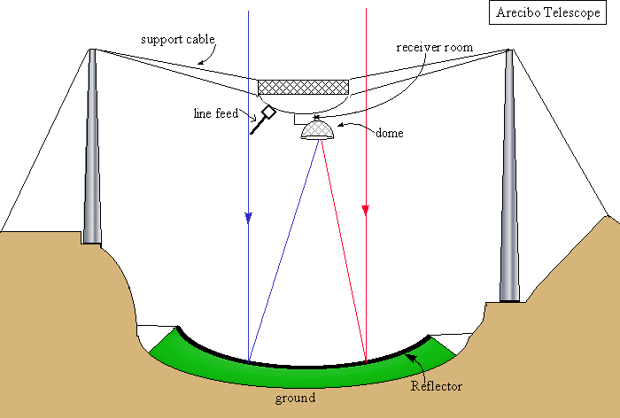

UAT09.01 Scavenger Hunt #0: The Arecibo Telescope
This scavenger hunt will explore some details of the Arecibo telescope and the Arecibo Observatory.-
0.0
Why do ALFALFA team folks always start enumerated lists with "0", not "1"?
0.1 Below is a schematic diagram of the AO
telescope as viewed from above.
The 900 ton platform hangs in midair on eighteen cables, which are strung
from three reinforced concrete towers. One is 365 feet high, and the other
two are 265 feet high. The towers are named as if they were on the face of
a clock oriented with "12" to the north: T4, T8 and T12.
Which tower is the tallest of the 3?
- horizon
- zenith
- cardinal directions N,S,E,W
- North Celestial Pole
- Celestial Equator
- Sun's path on Jan 13, 2009
- At what azimuth will we orient the Gregorian so that we can observe the drift 14p2 Monday night?
- What do we mean by an "uphill feed"?
- What are the advantages of Gregorian optics over line feeds?
- At what frequency does the very long line feed work?
- What popular movie features a fight between the hero and the bad guy on the long line feed?
- Use this diagram to figure out how long a source at Declination of +03o24'24" could be tracked using an uphill feed on Carriage House #1.

Note: this map predates the ground screen/upgrade.
0.2 In the movie "Contact", Jodie Foster and Matthew McConoughy have hanky panky in what building on the site?
0.3 Below is a schematic diagram of the local sky as observed from Arecibo.
| Imaging that you are standing at the
center looking up. Label on this diagram the following: |  |
0.4 On Monday afternoon, we have been allocated an hour of telescope time (from 4 to 5 pm AST) to demonstrate the ALFALFA observing setup. We will practice with the setup we'll use later that night (around midnight) when we will observe ALFALFA spring drift 14p2 at a Declination of +03o24'24". What will be the zenith angle of the drift?
0.5 Below is a schematic diagram of the AO platform as viewed from the side.

0.6 Here is a schematic diagram of the hour-angle - declination plane as observed from Arecibo.
| (Note that this one
comes from the good old days, so the limit designations don't include
the Gregorian or ALFA.)
|
 |
This page created by and for the members of the ALFALFA Survey Undergraduate team Last modified: Sat Jan 3 12:34:38 EST 2009 by Martha